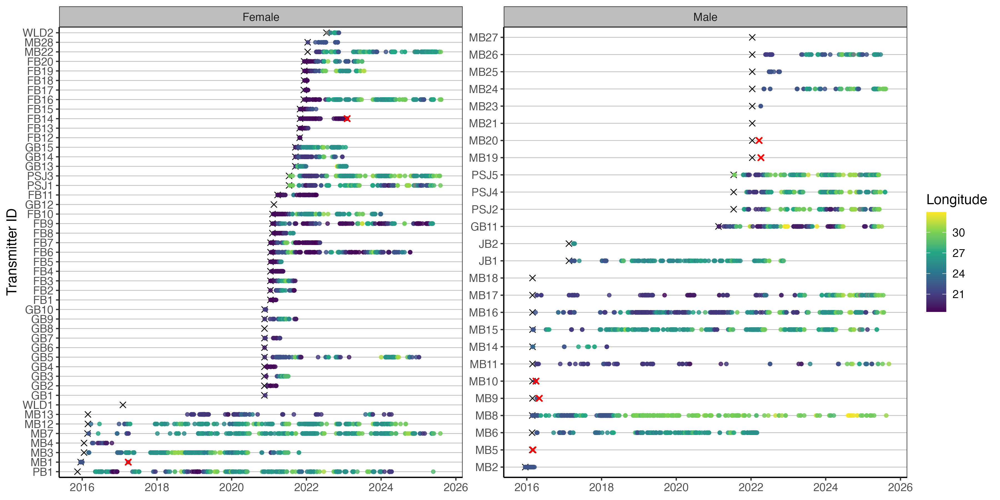
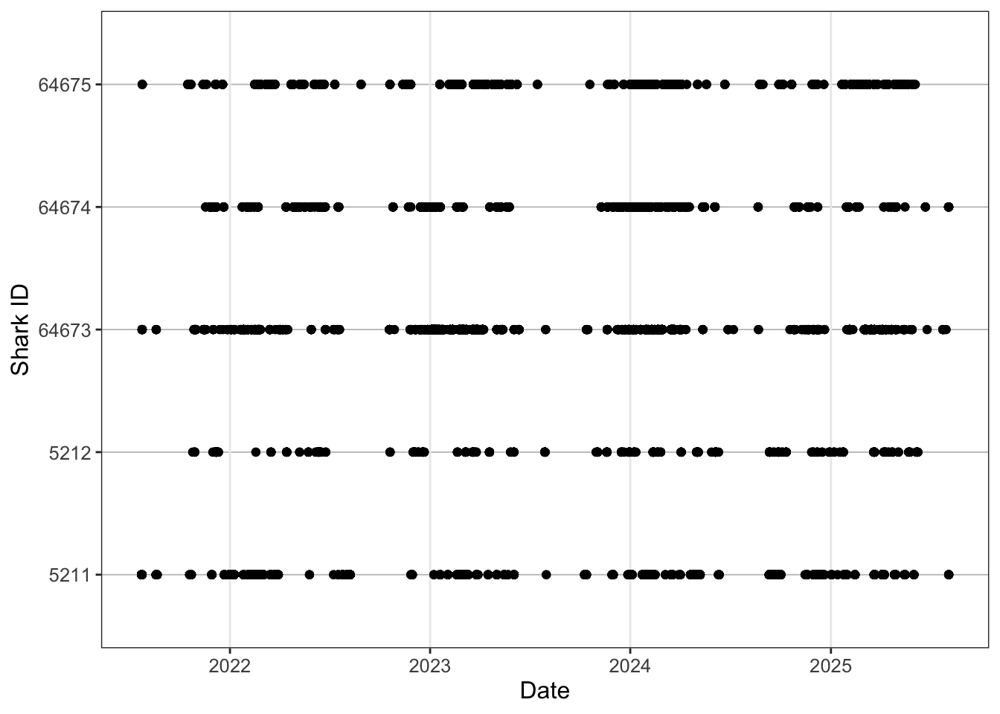
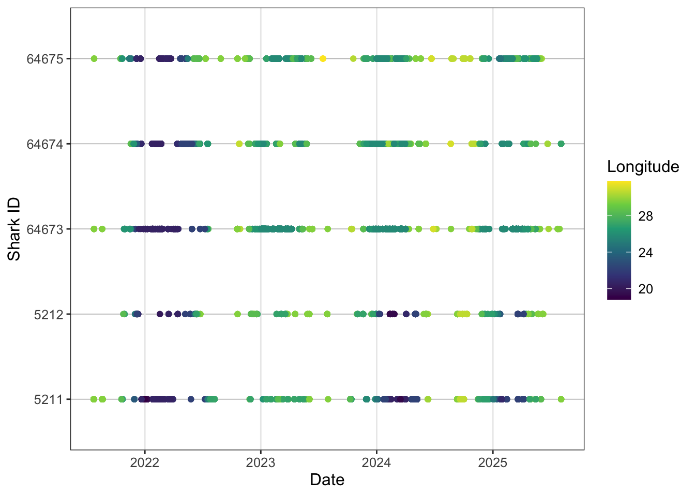
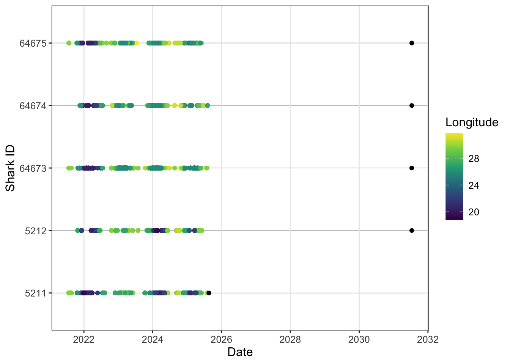
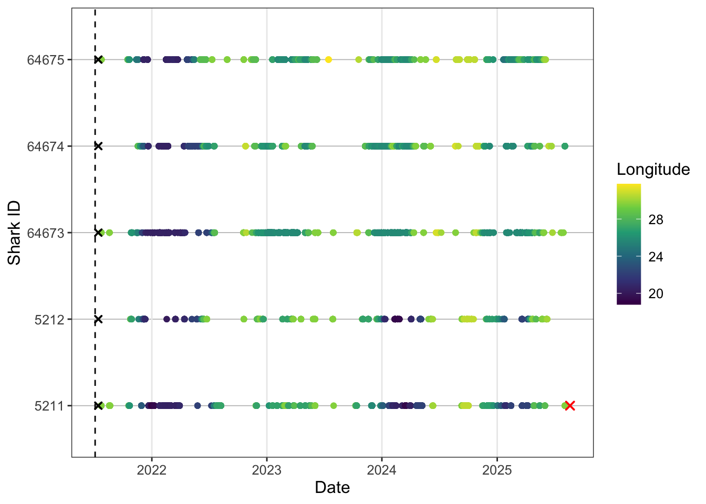
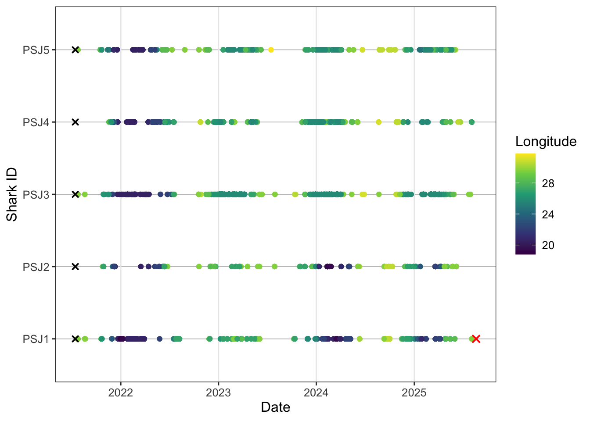
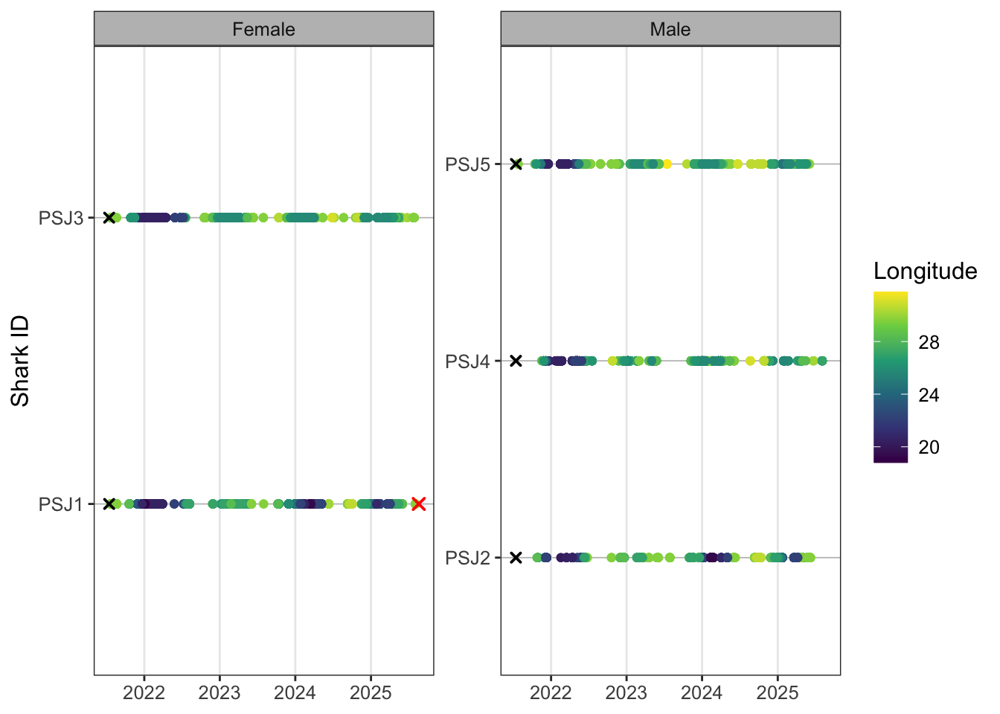
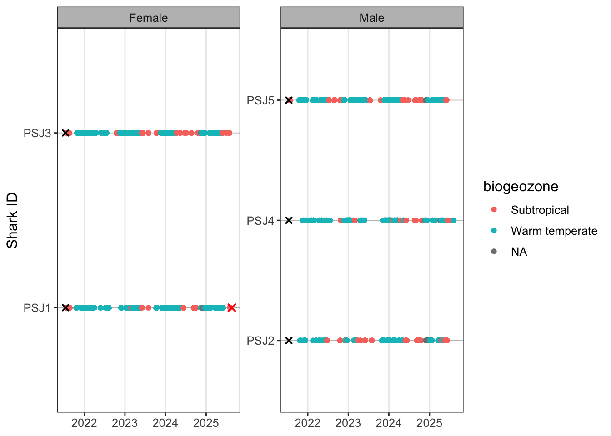
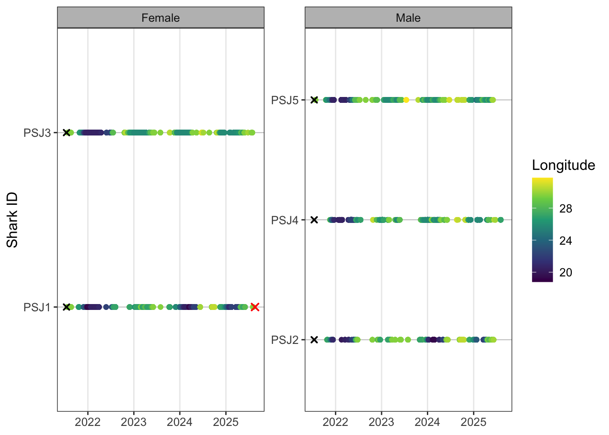
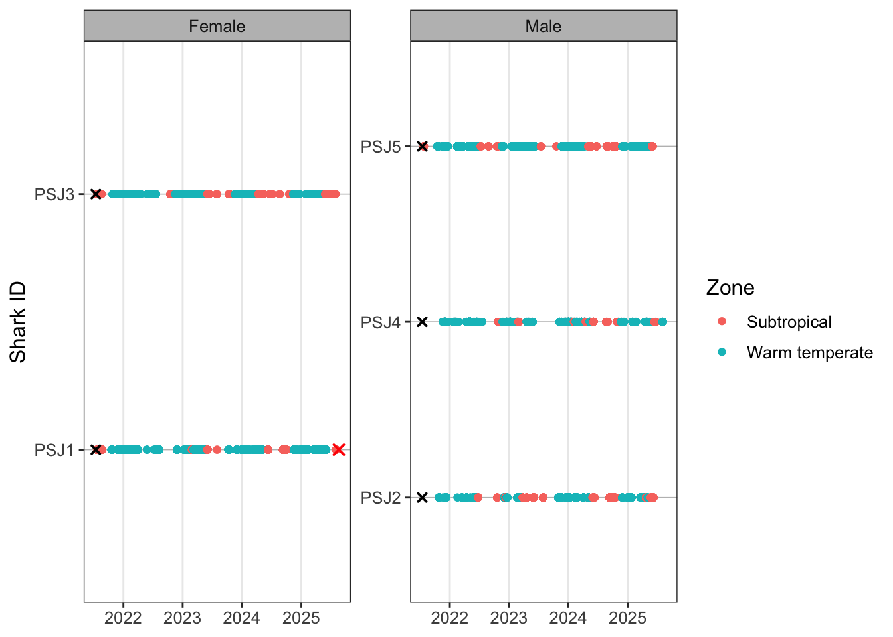

ATAP Workshop: Exploratory Figures
Exploratory figures
What are the first results that generally appear in the telemetry literature?
Usually an abacus plot:

And a summary table which gives useful biometrics and stats per individual for the reader:
It seems basic, but well presented opening tables and figures set the tone for the rest of the paper.
Load cleaned data
Load your detections, biometrics, receivers and release sites.
Remember that the datasets we’ve cleaned broadly stem from ATAP outputs. If you source data direct form VUE/Fathom or your own database then you’ll just need to spend a bit of time rejigging column names. But this should give you the bones you need to play with code and figure out what works for your data. Similarly to use more applied packages like {VTrack}, {actel}, {rsp}, {GLATOS}, {flapper} and many more you’ll need to read up on package vignettes with how to format your data so that the packages will accept them.
But it is useful to work through some of these examples and tweak them using your own data at a later date.
[1] "UTC"[1] "There are 19142 detections in the dataset."The timezone was converted to SAST in the cleaning workflow, but this was not retained in the csv, so force it rather than reconverting.
Code
detections <- detections %>%
mutate(
timestamp = force_tz(
timestamp,
tzone = "Africa/Johannesburg"
), # remember we converted to SAST in the cleaning so needs forcing
transmitter = as.character(transmitter)
) %>%
mutate(detectday = as.Date(timestamp)) %>% ## remove time to only include > 1 detection on any receiver per day
group_by(detectday, transmitter) %>%
filter(n() > 1) %>%
ungroup() %>%
select(-detectday)
lubridate::tz(detections$timestamp)[1] "Africa/Johannesburg"[1] "There are 19072 detections in the dataset."False detection filtering can be much more refined, especially for more resident species on smaller arrays. For example, a common rule is to require at least two detections within a defined time window, such as one hour, either at the same receiver or within the same local receiver group. At the scale of this regional array, and for the purposes of this workshop, we use a simple conservative filter: remove transmitter-days with only one detection anywhere on the array. This can also be more applicable for wide-ranging nomadic species.
Speed filter
Another method of removing false detections is by using a speed filter. Many packages can do this for you but we can do a quick and dirty approach to highlight potentially unreasonable detection intervals or speeds between consecutive detections.
Code
# define a conservative speed threshold for flagging unusual movements
max_speed_kmh <- 3
# similar to how we've worked with the receivers we use lags between consecutive detections
# to understand the time difference between each detection relative to each
# transmitter
detections_speed <- detections %>%
arrange(transmitter, timestamp) %>%
group_by(transmitter) %>%
mutate(
previous_timestamp = lag(timestamp),
previous_station = lag(station_name),
previous_latitude = lag(latitude),
previous_longitude = lag(longitude),
time_diff_hours = as.numeric(
difftime(timestamp, previous_timestamp, units = "hours")
),
# using the geosphere package we can conservatively estimate the shortest path between
# two receivers in km
distance_km = geosphere::distHaversine(
cbind(previous_longitude, previous_latitude),
cbind(longitude, latitude)
) / 1000,
# simple speed = dist / time calc
speed_kmh = distance_km / time_diff_hours,
# use logical statements to see whether there are wierd things going on
possible_false_detection =
is.finite(speed_kmh) &
speed_kmh > max_speed_kmh &
distance_km > 5 # filter to remove overlapping receiver ranges this can also be tweaked
) %>%
ungroup() %>%
filter(possible_false_detection) %>%
arrange(desc(speed_kmh))Lets inspect the speed calculations.
Code
# A tibble: 54 × 5
station_name previous_station time_diff_hours distance_km speed_kmh
<chr> <chr> <dbl> <dbl> <dbl>
1 AMA008 KM003 1.28 7.19 5.61
2 KLM003 KLM008 2.40 12.2 5.08
3 KLM007 KLM008 1.36 6.42 4.73
4 PA003 KLM008 3.36 15.8 4.69
5 KLM014 KLM002 2.89 12.8 4.43
6 AMA008 KM001 1.58 6.45 4.10
7 KLM008 KM001 37.0 147. 3.98
8 AB004 Woody Cape West 6.27 24.8 3.96
9 KLM002 KLM007 1.49 5.89 3.95
10 AB002 Woody Cape Offshore… 2.16 8.52 3.95
11 GB003 MB007 1.42 5.58 3.94
12 PA002 KM003 42.1 163. 3.88
13 GB002 MB004 1.31 5.05 3.85
14 KLM007 KLM008 1.68 6.42 3.82
15 KLM008 KM001 39.7 147. 3.71
16 Sundays Offshore 1 Woody Cape West 4.19 15.4 3.67
17 KLM008 KLM006 1.78 6.53 3.66
18 GB001 MB001 1.37 5.00 3.65
19 GB003 MB004 1.38 5.05 3.64
20 KLM008 KM001 41.0 147. 3.59
# ℹ 34 more rowsWhile there are a few instances of fast swim speeds above our threshold, the receivers are relatively close to one another so there isn’t too much concern here. Again this is a relatively quick and dirty approach but you can tweak these to test for unrealistically quick and far detections that you can identify for removal. Another key removal criteria is to remove any detections you have for that transmitter prior to its release date or after a known mortality date.
Force the same timezone for receivers.
Code
[1] "Africa/Johannesburg"[1] "Africa/Johannesburg"Abacus plots
Lets plot a few standard telemetry plots. The go to is usually an abacus plot of your detections.
Cool first abacus plotted, but it is a bit boring, and this is the power of ggplot, R and all the customisation you can do to get the perfect plot for your thesis or manuscript. We can build in some aesthetics to make the plot pop a bit.
Code
ggplot()+
geom_point(data = detections, aes(x = timestamp, y = transmitter))+
theme_bw() +
theme(
panel.background = element_blank(),
panel.grid.major.y = element_line(colour = "grey", linewidth = 0.3),
# panel.grid.minor.y = element_blank(),
# panel.grid.major.x = element_blank(),
panel.grid.minor.x = element_blank(),
#axis.line = element_line(colour = "black"),
strip.background = element_rect(fill = "grey"),
text = element_text(size = 12)
)+
labs(x = "Date",
y = "Shark ID") ## customise your labels
Still kinda boring though.
Code
ggplot()+
geom_point(data = detections, aes(x = timestamp, y = transmitter, colour = longitude))+
scale_colour_viridis_c(name = "Longitude") +
theme_bw() +
theme(
panel.background = element_blank(),
panel.grid.major.y = element_line(colour = "grey", linewidth = 0.3),
panel.grid.minor.x = element_blank(),
strip.background = element_rect(fill = "grey"),
text = element_text(size = 12)
)+
labs(x = "Date",
y = "Shark ID")
Nice, looking a bit more interesting. Lets try and add some more information to the plot. Remember in the biometrics we had a shark that was recaptured, so lets try and plot the start and end dates for each tag so we get an effective study window.
Sometimes researchers only present results for animals that were detected. However, non-detections are also extremely important. They provide insight into how effective the overall sample size was and can help inform interpretations around emigration, mortality, tag failure, or anthropogenic impacts.
Quantifying mortality in telemetry studies is often difficult unless a transmitter is physically recovered, but recognising that 100% detection success is unlikely is a crucial part of interpreting telemetry datasets realistically.
In this example we know the fate of the shark because the transmitter was returned through a fishery capture, allowing us to confidently close the detection history for that individual. In many cases, however, you may only observe a small number of detections shortly after tagging, despite the transmitter having an expected battery life of several years.
Without a known fate for the individual, interpreting these sparse detections becomes more complicated. The shark may have emigrated from the study area, experienced mortality, the tag may have failed, or the individual could simply remain undetected before reappearing years later and continuing to provide valid detections.
For this reason, it is generally good practice to assume that transmitters have an equal opportunity for detection until either the study end date or the expected expiration of the transmitter battery, unless there is evidence to justify treating the tag differently.
Code
ggplot()+
geom_point(data = detections, aes(x = timestamp, y = transmitter, colour = longitude))+
scale_colour_viridis_c(name = "Longitude") +
geom_point(data = biometrics, aes(tag_end, transmitter))+
theme_bw() +
theme(
panel.background = element_blank(),
panel.grid.major.y = element_line(colour = "grey", linewidth = 0.3),
panel.grid.minor.x = element_blank(),
strip.background = element_rect(fill = "grey"),
text = element_text(size = 12)
)+
labs(x = "Date",
y = "Shark ID")
So the tag.end here is way outside our study period because we’re using the transmitter estimate end date for a 10 year tag. We therefore need to add some study bounds to contain this. In this case let’s call study start when the sharks were tagged and the study end we can call 2026-12-31 therefore we’ll only want to retain the recaputre sharks metadata.
Code
study_start <- ymd("2021-07-05", tz = "Africa/Johannesburg") # where you have multiple transmitters deployed at different times
# use your first tag as the study start but it you can also use this to plot on the abacus if you wanted
study_end <- ymd("2026-12-31", tz = "Africa/Johannesburg")
## this will be more useful for the summary tabel calculations later onWe can filter data within ggplot.
Code
ggplot()+
geom_point(data = detections, aes(x = timestamp, y = transmitter, colour = longitude))+
scale_colour_viridis_c(name = "Longitude") +
geom_point(data = biometrics %>%
filter(recaptured == "Y"), aes(tag_end, transmitter),
colour = "red", shape = 4, stroke = 1, size = 2)+
geom_vline(xintercept = study_start, linetype = "dashed", colour = "black")+
# or plot x at the start of each transmitter
geom_point(
data = biometrics,
aes(x = release_date, y = transmitter), shape = 4, stroke = 1, size = 1.5)+
theme_bw() +
theme(
panel.background = element_blank(),
panel.grid.major.y = element_line(colour = "grey", linewidth = 0.3),
panel.grid.minor.x = element_blank(),
strip.background = element_rect(fill = "grey"),
text = element_text(size = 12)
)+
labs(x = "Date",
y = "Shark ID")
We also might not want to publish raw ID codes so we can do some creative shark ID creation based on what we already have.
We can add this to our detections as well if we want to use this code instead of ID. Add some bio info and turn sex to factor.
And now lets replot.
Code
ggplot()+
geom_point(data = detections, aes(x = timestamp, y = shark, colour = longitude))+
scale_colour_viridis_c(name = "Longitude") +
geom_point(data = biometrics %>%
filter(recaptured == "Y"), aes(tag_end, shark),
colour = "red", shape = 4, stroke = 1, size = 2)+
geom_point(data = biometrics,
aes(x = release_date, y = shark), shape = 4, stroke = 1, size = 1.5)+
theme_bw() +
theme(
panel.background = element_blank(),
panel.grid.major.y = element_line(colour = "grey", linewidth = 0.3),
panel.grid.minor.x = element_blank(),
strip.background = element_rect(fill = "grey"),
text = element_text(size = 12)
)+
labs(x = "Date",
y = "Shark ID")
Cool so the ylab now tells us the provenence of each shark and it’s tagging order as an id code. One last tweak to really squeeze the juice.
Code
abacus_sex <- ggplot()+
geom_point(data = detections, aes(x = timestamp, y = shark, colour = longitude))+
scale_colour_viridis_c(name = "Longitude") +
geom_point(data = biometrics %>%
filter(recaptured == "Y"), aes(tag_end, shark),
colour = "red", shape = 4, stroke = 1, size = 2)+
geom_point(data = biometrics,
aes(x = release_date, y = shark), shape = 4, stroke = 1, size = 1.5)+
facet_wrap(~sex, scales = "free_y", ncol = 2, labeller = labeller(sex = c("F" = "Female", "M" = "Male")))+ # customise your facet labels
theme_bw() +
theme(
panel.background = element_blank(),
panel.grid.major.y = element_line(colour = "grey", linewidth = 0.3),
panel.grid.minor.x = element_blank(),
strip.background = element_rect(fill = "grey"),
text = element_text(size = 12)
)+
labs(x = NULL,
y = "Shark ID")
abacus_sex
Faceting plots is a quick way to render useful insights based on different factors you might be interested in. You can swap out sex for group or release location for example. These just need to be coded as factors so ggplot can render. If you have several plots that you want to combine into a detailed multi-panel figure, then you would need to create separate plot objects (e.g. p1, p2, p3) and use the {cowplot}, {patchwork} or {gridExtra} packages to neatly arrange your plots into nice rows and columns.
For 5 individuals there are ~20k detections that ggplot is trying to render. When you have lots of tags and tens of thousands of detections, plotting can become slow. One useful option is to thin the data for visualisation by keeping only the first detection per shark, receiver and day. This keeps a daily record of receiver use while removing repeated intraday detections and reduces the computational burden of rendering the abacus plot. Looks pretty good lets export to our plot folder and tweak the image dimensions.
At the array scale plotting points by receiver can get pretty messy, but it might be something of interest to a finer scale study. Alternatively we can build in another grouping level to give the study region some more biogeographic context. Broadly from Mozambique to St. Lucia is tropical, then subtropical to Kei mouth and warm-temperate after Kei mouth.
And we can add country in a similar way if we’re dealing with transboundary movement.
Last abacus this time by biozone.
Code
ggplot()+
geom_point(data = detections, aes(x = timestamp, y = shark, colour = biogeozone))+
geom_point(data = biometrics %>%
filter(recaptured == "Y"), aes(tag_end, shark),
colour = "red", shape = 4, stroke = 1, size = 2)+
geom_point(data = biometrics,
aes(x = release_date, y = shark), shape = 4, stroke = 1, size = 1.5)+
facet_wrap(~sex, scales = "free_y", ncol = 2, labeller = labeller(sex = c("F" = "Female", "M" = "Male")))+
theme_bw() +
theme(
panel.background = element_blank(),
panel.grid.major.y = element_line(colour = "grey", linewidth = 0.3),
panel.grid.minor.x = element_blank(),
strip.background = element_rect(fill = "grey"),
text = element_text(size = 12)
)+
labs(x = NULL,
y = "Shark ID")
You’ll notice more gremlins appearing. Let’s have a look at which receivers are giving trouble and if we can fix it.
# A tibble: 8 × 1
station_name
<chr>
1 KLM015
2 KLM010
3 KLM012
4 KLM014
5 KLM011
6 KLM013
7 KLM016
8 Black Rocks InsideA step further, cases often creep in and become problematic. Typically you can lowercase everything at the start of your workflow but I’ve left these in to illustrate how it can cause headaches if you don’t take steps at the start of your qc process to sort these out before things break
Code
detections %>%
filter(is.na(biogeozone)) %>%
distinct(station_name) %>%
mutate(
station_match = tolower(station_name)
) %>%
left_join(
receivers %>%
distinct(station_name) %>%
mutate(
receiver_station_name = station_name,
station_match = tolower(station_name)
) %>%
select(receiver_station_name, station_match),
by = "station_match"
)# A tibble: 8 × 3
station_name station_match receiver_station_name
<chr> <chr> <chr>
1 KLM015 klm015 <NA>
2 KLM010 klm010 <NA>
3 KLM012 klm012 <NA>
4 KLM014 klm014 <NA>
5 KLM011 klm011 <NA>
6 KLM013 klm013 <NA>
7 KLM016 klm016 <NA>
8 Black Rocks Inside black rocks inside Black Rocks inside So we can see that the issues in the detection data is Black Rocks Inside is capitalised and we find a match when we do a temp lower case. In the case of the KLM receiver it appears that there is no receiver metadata so we have to go hassle Taryn for upto date metadata. So we can do a manual change.
Code
detections <- detections %>%
mutate(
station_name = case_when(
station_name == "Black Rocks Inside" ~ "Black Rocks inside",
TRUE ~ station_name
)
) %>%
filter(
!station_name %in% c(
"KLM010",
"KLM011",
"KLM012",
"KLM013",
"KLM014",
"KLM015",
"KLM016"
)##### and then remove detections for which we have no metadata for
)Rerun.
As we checked with our lost receivers lets take another qc step to now check that all detection data have receiver metadata.
# A tibble: 0 × 12
# ℹ 12 variables: timestamp <dttm>, receiver <dbl>, station_name <chr>,
# latitude <dbl>, longitude <dbl>, transmitter <chr>, shark <chr>, sex <fct>,
# group <chr>, region.x <chr>, biogeozone <chr>, region.y <chr>Replot and save based on updated detections.
Code
abacus_sex <- ggplot()+
geom_point(data = detections, aes(x = timestamp, y = shark, colour = longitude))+
scale_colour_viridis_c(name = "Longitude") +
geom_point(data = biometrics %>%
filter(recaptured == "Y"), aes(tag_end, shark),
colour = "red", shape = 4, stroke = 1, size = 2)+
geom_point(data = biometrics,
aes(x = release_date, y = shark), shape = 4, stroke = 1, size = 1.5)+
facet_wrap(~sex, scales = "free_y", ncol = 2, labeller = labeller(sex = c("F" = "Female", "M" = "Male")))+
theme_bw() +
theme(
panel.background = element_blank(),
panel.grid.major.y = element_line(colour = "grey", linewidth = 0.3),
panel.grid.minor.x = element_blank(),
strip.background = element_rect(fill = "grey"),
text = element_text(size = 12)
)+
labs(x = NULL,
y = "Shark ID")
abacus_sex
Code
ggplot()+
geom_point(data = detections, aes(x = timestamp, y = shark, colour = biogeozone))+
geom_point(data = biometrics %>%
filter(recaptured == "Y"), aes(tag_end, shark),
colour = "red", shape = 4, stroke = 1, size = 2)+
geom_point(data = biometrics,
aes(x = release_date, y = shark), shape = 4, stroke = 1, size = 1.5)+
facet_wrap(~sex, scales = "free_y", ncol = 2, labeller = labeller(sex = c("F" = "Female", "M" = "Male")))+
theme_bw() +
theme(
panel.background = element_blank(),
panel.grid.major.y = element_line(colour = "grey", linewidth = 0.3),
panel.grid.minor.x = element_blank(),
strip.background = element_rect(fill = "grey"),
text = element_text(size = 12)
)+
labs(x = NULL,
y = "Shark ID",
colour = "Zone")
Excercise
Try using some of the above code to:
- Facet your abacus plot by biogeographic zone
- Just plot the regular abacus plot for females
- Change the legend label on the zone plot to biogeographic zone
- Use scale_colour_manual() to choose your own colours for the biogeographic zones (window press F1, mac press fn + F1 to take a look at the help section if you get stuck)
- Change the legend position to the bottom of the plot (hint look in the theme() help)
Detection summary table
Code
tablesum <- biometrics %>%
left_join(
detections %>%
mutate(
detect_date = as.Date(timestamp)
) %>%
group_by(transmitter) %>%
summarise(
detections = n(),
receivers = n_distinct(station_name),
days_detected = n_distinct(detect_date),
first_detect = min(detect_date),
last_detect = max(detect_date),
.groups = "drop"
),
by = "transmitter"
) %>%
mutate(
detections = coalesce(detections, 0L), ### this is a nice safety net when reporting tags with no detections as you've drawn from your overall sample instead of detected
receivers = coalesce(receivers, 0L),
days_detected = coalesce(days_detected, 0L),
# adjust the end date of the taf based on known fate dates
effective_tag_end = case_when(
recaptured == "Y" & tag_end < study_end ~ tag_end,
TRUE ~ study_end
),
days_at_liberty = as.numeric(
difftime(last_detect, release_date, units = "days")
),
total_days = as.numeric(
difftime(effective_tag_end, release_date, units = "days")
),
detections_per_day_detected = if_else(
days_detected > 0,
detections / days_detected,
NA_real_
),
###### residency can be calualted in a number of meaningful ways in this case it is residency/occurence in the entire array
##### for a wide ranging sepcies. At finer scales using a different RI could also be useful but see Appert et al (2023)
residency_index = if_else(
total_days > 0,
days_detected / total_days,
NA_real_
)
)
tablesum %>% select(release_date,shark,release,detections,receivers,days_detected,residency_index)# A tibble: 5 × 7
release_date shark release detections receivers days_detected residency_index
<date> <chr> <chr> <int> <int> <int> <dbl>
1 2021-07-15 PSJ1 PSJ 3157 61 148 0.0989
2 2021-07-15 PSJ2 PSJ 1092 55 86 0.0431
3 2021-07-15 PSJ3 PSJ 8344 54 261 0.131
4 2021-07-15 PSJ4 PSJ 2389 68 155 0.0777
5 2021-07-15 PSJ5 PSJ 3881 65 181 0.0907There’s a huge amount of literature on residency indices for acoustic telemetry, so check in on this to see which would make sense for your context. RIs are not perfect but give a good indication of what individuals and indeed your tagged ‘population’ are doing.
We can also apply some simple maths functions to our data which are often summariesed to represent the tagged cohort of animals
Exercise
Now calculate the mean and sd for
- Convert your residency index to a %
- Receivers detected on
- Days detected
- Residency
What does your residency average actually mean?
The residency calculation implies that sharks were detected, on average, during only ~9% of the days they were at liberty (liberty meaning from tag - study end date). This gives you really useful context about the detection efficacy of the array for the species you’re studying. It also becomes important later when modelling these data, as sparse detections, uneven receiver coverage, or highly transient behaviour can strongly influence how robust and interpretable downstream statistical models are likely to be.
Now let’s create a nice publication ready table that summarises some of these important stats for the reader
Code
publication_table <- tablesum %>%
mutate(effective_tag_end = as.Date(effective_tag_end)) %>%
mutate(
residency_index = round(residency_index, 3),
total_days = round(total_days, 0),
) %>%
rename_with(
~ stringr::str_to_sentence(gsub("_", " ", .x))
)
publication_flex <- publication_table %>%
flextable() %>%
autofit() %>%
theme_booktabs() %>%
bold(part = "header") %>%
align(
align = "center",
part = "all"
) %>%
fontsize(
size = 17,
part = "all"
) %>%
width(
width = 0.55
) %>%
colformat_num(
big.mark = "",
digits = 0
)
publication_flexRelease date | Serial no | Transmitter | Size | Species | Group | Release | Sex | Recaptured | Tag life | Tag end | Shark | Detections | Receivers | Days detected | First detect | Last detect | Effective tag end | Days at liberty | Total days | Detections per day detected | Residency index |
|---|---|---|---|---|---|---|---|---|---|---|---|---|---|---|---|---|---|---|---|---|---|
2021-07-15 | A69-9001-5211 | 5211 | 215 | Bronze Whaler | SUB | PSJ | F | Y | 3650 | 2025-08-20 | PSJ1 | 3157 | 61 | 148 | 2021-07-23 | 2025-08-03 | 2025-08-19 | 1480 | 1497 | 21.33108 | 0.099 |
2021-07-15 | A69-9001-5212 | 5212 | 181 | Bronze Whaler | SUB | PSJ | M | N | 3650 | 2031-07-13 | PSJ2 | 1092 | 55 | 86 | 2021-10-25 | 2025-06-08 | 2026-12-30 | 1424 | 1995 | 12.69767 | 0.043 |
2021-07-15 | A69-9001-64673 | 64673 | 187 | Bronze Whaler | SUB | PSJ | F | N | 3650 | 2031-07-13 | PSJ3 | 8344 | 54 | 261 | 2021-07-24 | 2025-07-29 | 2026-12-30 | 1475 | 1995 | 31.96935 | 0.131 |
2021-07-15 | A69-9001-64674 | 64674 | 199 | Bronze Whaler | SUB | PSJ | M | N | 3650 | 2031-07-13 | PSJ4 | 2389 | 68 | 155 | 2021-11-17 | 2025-08-03 | 2026-12-30 | 1480 | 1995 | 15.41290 | 0.078 |
2021-07-15 | A69-9001-64675 | 64675 | 202 | Bronze Whaler | SUB | PSJ | M | N | 3650 | 2031-07-13 | PSJ5 | 3881 | 65 | 181 | 2021-07-24 | 2025-06-03 | 2026-12-30 | 1419 | 1995 | 21.44199 | 0.091 |
Exercise
Let’s customise our publication table as currently everything from tablesum is being rendered so let’s refine by:
- Retaining what you think are the most useful columns (this is entirely personal hint: use select)
- Change the text size in the table to 15
- rename Residency index to RI (this is tricky! You might need to use `` if you decide to rename Residency index after str_sentence)
- Convert your RI to %
There’s lots of different export formats, but this image export aligns to A4 so you can go manual and import into a word doc. Eventually working in Rmarkdown and quarto can rapidly improve your writing analysis workflow and everything gets updated in one place
[1] "tables/publication_summary_table.png"As with any table there’s a million ways to skin it and style it to present the core results that you want to in the most effective form. This is great as it gives you a structered way to be creative and more importantly repeatable for you and others. How many times have you manually updated your perfectly formatted word table for something to go wrong or you weren’t paying attention to decimal places. R does all the heavy lifting so you can focus on interpreting results. Other great packages include the {gt} package
Bonus interactive map
Mapping in R might be a strange concept for those familiar with the ESRI suite of tools (Arcmap, ArcGIS pro etc.) or even being a dab hand at QGIS. In both cases you can also sricpt to carry out your mapping tasks using python, but we’re in R already so let’s apply some steps to produce some interactive maps. Static maps are great for theses and publications, but it’s less intuitive to harvest insights from especially if you’re working at large coastal scales. Therefore we can create interactive maps using the leaflet package and you can engage with the data. This is also a neat little trick to be able to send snippets of information to your supervisor or collaborators so they can also wrap their heads around what is going on. This is also useful to identify hotspots at the individual and population level, so you can have a bit more of an informed process of deciding on appropriate analysis.
Some useful things to interrogate at the individual level are the number of detections per receiver and maybe look at the number of movements between receivers. By scaling your point size and linewidths to the data we can start to see if there are any obvious patterns. Remember when it comes to static or inteactive mapping you’re pretty much removing the temporal component of the study.
Lets plot the leaflet map to see what we’re working with as a base.
Let’s create some summary stats from our detection df. First summarise the number of detections a transmitter has recorded on each receiver.
Code
# A tibble: 6 × 7
shark station_name latitude longitude n_detections first_detection
<chr> <chr> <dbl> <dbl> <int> <dttm>
1 PSJ1 AB001 -33.8 26.3 6 2023-01-07 20:12:44
2 PSJ1 AB003 -33.8 26.3 8 2021-10-22 11:01:58
3 PSJ1 AMA008 -32.7 28.3 12 2023-05-23 00:40:51
4 PSJ1 ATAP_Hougham -33.8 25.7 9 2023-11-30 07:58:36
5 PSJ1 ATAP_Wells -33.8 25.7 4 2023-12-27 16:43:27
6 PSJ1 BLB001 -34.4 21.1 8 2025-01-29 17:33:40
# ℹ 1 more variable: last_detection <dttm>Cool so we can see that n_detections gives us the number of detections at each receiver per transmitter irrespective of time. The following chunk allows us to create some labels so that when you hover over the receiver you get some information about the receiver name and the number of detections recorded.
Code
detections_receiver_sum <- detections_receiver_sum %>%
mutate(
receiver_label = paste0(
station_name,
": ",
n_detections,
" detections"
),
popup_label = paste0(
"<b>Station:</b> ", station_name, "<br>",
"<b>Shark:</b> ", shark, "<br>",
"<b>Detections:</b> ", n_detections, "<br>",
"<b>First detection:</b> ", first_detection, "<br>",
"<b>Last detection:</b> ", last_detection
)
)And now lets look at the movement pathways. So far we’ve used lag() alot to look at previous detections, but we want to look forward now so we use lead().
Code
movement_lines <- detections %>%
arrange(shark, timestamp) %>%
group_by(shark) %>%
# create new columns that contain the next receiver long lat and name
mutate(
next_station = lead(station_name),
next_latitude = lead(latitude),
next_longitude = lead(longitude),
# since there can be movements both ways between receivers
# create a pair so the label is able to show two way movement
# you could also create arc or offset lines to visualise
station_pair = paste(
pmin(station_name, next_station),
pmax(station_name, next_station),
sep = " - "
),
direction = paste0(station_name, " -> ", next_station)
) %>%
ungroup() %>%
filter(
!is.na(next_station),
station_name != next_station ## remove any paths that loop back on the same receiver
) %>%
# group by all your new variables
group_by(
shark,
station_pair,
direction,
latitude,
longitude,
next_latitude,
next_longitude
) %>%
# calcualte the movement pathways between receivers.
summarise(
n_movements = n(),
.groups = "drop"
) %>%
group_by(shark, station_pair) %>%
# collapse bidirectional receiver movements into a single spatial line
# while retaining directional movement counts in the hover label
# this avoids plotting duplicate overlapping lines between the same receivers
summarise(
n_movements_total = sum(n_movements),
movement_label = htmltools::HTML(
paste0(
direction,
": ",
n_movements,
" movements",
collapse = "<br>"
)
),
latitude = first(latitude),
longitude = first(longitude),
next_latitude = first(next_latitude),
next_longitude = first(next_longitude),
.groups = "drop"
) %>%
# for each row, build one separate linestring geometry
rowwise() %>%
mutate(
geometry = list(
sf::st_linestring(
matrix(
c(
longitude, latitude,
next_longitude, next_latitude
),
ncol = 2,
byrow = TRUE
)
)
)
) %>%
ungroup() %>%
sf::st_as_sf(crs = 4326)Considering receviers will be in water (dark blues), let’s create a colour palette that will pop against this. You can use variants of viridis etc as well but above gives you a pathway to your own customisation. The domain links to the transmitters in the detections df and gives tolerence for additional transmitters.
Lets build our leaflet plot from the detection_receiver_sum and movement_lines dfs that we have created. The leaflet vignette is pretty good but I’ve left comments in the code so you know what polylines and cricle markers are plotting. Remember that the order in which you code the plot is the order in which the layers are drawn. In this case we have our lines underneath the receivers.
Code
m <- leaflet() %>%
addProviderTiles(providers$Esri.WorldImagery) %>%
# add your movement lines and create the label that will show
# your one or two way labels
addPolylines(
data = movement_lines,
weight = ~scales::rescale(
n_movements_total,
to = c(2, 10)
),
color = ~pal(shark), # be careful with US vs british spelling
# ggplot is pretty good at handling spelling variants but not leaflet
opacity = 0.8,
label = movement_lines$movement_label,
group = ~shark
) %>%
# add your receivers and scale the radius
# NOTE the scale is visual only and legends aren't that useful here
# to infer proportionality
addCircleMarkers(
data = detections_receiver_sum,
lng = ~longitude,
lat = ~latitude,
radius = ~scales::rescale(
n_detections,
to = c(5, 22)
),
color = "white",
fillColor = ~pal(shark), # see above spelling
fillOpacity = 0.85,
stroke = TRUE,
weight = 1.5,
label = ~receiver_label,
popup = ~popup_label,
group = ~shark
) %>%
# add the transmitter to the control panel in the top right
addLayersControl(
overlayGroups = unique(detections_receiver_sum$shark),
options = layersControlOptions(collapsed = FALSE)
) %>%
# add your legend with colour palette
addLegend(
position = "bottomright",
pal = pal,
values = detections_receiver_sum$shark,
title = "Shark"
) %>%
# instead of all transmitters being plotted when opened you select the first
# one in the order
hideGroup(unique(detections_receiver_sum$shark)[-1])
mHave a look and see if you can answer:
- For shark PSJ3, which receiver has the most detections?
- What is the most westerly receiver PSJ1 was detected on?
- What is the most northern receiver PSJ5 was detected on?
- How many movements did PSJ5 record between the PSJ002 and PSJ003 receivers? (Hint look on the east coast)
There’s other spatial tools that you can add to your leaflet map including the option to measure distance and area as well as add place labels etc. So there’s lots of customisation potential which can be used for outreach, funders, supervisors and collaborators as a quick peek approach. While not overly useful for static maps you can start to get your bearings with leaflet as to the scales that you will need to apply for your static figures. This can help with data extraction for base layers and coastlines.
For static maps, the {rnaturalearth} package has a couple of good resolution layers for broadscale approaches. The osmdata (https://osmdata.openstreetmap.de/data/coastlines.html) website is another fantastic resource for fine resolution coastlines if you’re working at much higher spatial resolutions. A step further to give your maps extra depth (haha bathymetry pun…) is GEBCO (https://www.gebco.net/data-products/gridded-bathymetry-data). Here you can download gridded geotiffs and subset the dataset to give you smooth bathymetry layers.
Finally, when working with spatial data inevitably you’ll want to apply a bounding box to subset your study so you can use a few online tools to get you coordinates to apply to your bounding boxes. Collectively you can avoid all the clicking and remembering where menu bars are in GIS software (or learning python) to produce static figure like this: